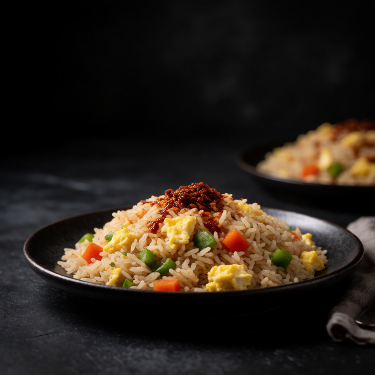

Using entirely freezer ingredients. Frozen rice, vegetables, egg. Dinner in 10 minutes flat.
Cold rice separates and browns more readily than fresh rice. Let it sit against the hot pan long enough to develop crisp edges before tossing.
At a Glance
Prep
2m
Cook
10m
Serves
1
Difficulty
Easy
Ingredients
Method
- 01
Fry everything
Fry 1 pouch of rice and 1/2 cup of frozen vegetables in 1 tbsp hot oil until crispy. Push aside, scramble 2 eggs, and fold through.
- 02
Season
Add 2 tsp soy sauce, toss, and finish with 1 tsp sesame oil and chilli crisp.
Slop Notes
Microwave pouches of rice work surprisingly well for fried rice because they are already slightly dried.
Recipe by foidslop · How we create our recipes